how to solve a rubiks cube
how the cube works
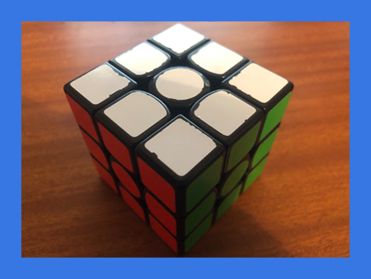
this is a rubik's cube, a very famous and popular toy. also very frustrating, due to it's difficulty, as i'm sure you are aware.
you see here how the cube is solved? you can do this too!
you see here how the cube is solved? you can do this too!
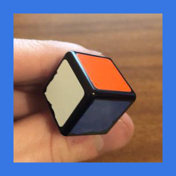
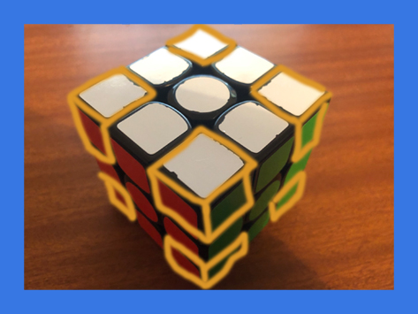
the cube has 8 corner pieces. they each have 3 stickers on them. corner pieces MUST stay in the corners, it is phsyically
impossible for a corner piece to move to an edge or centre, and there is only 1 of each corner piece.
remember, you are solving pieces, NOT stickers.
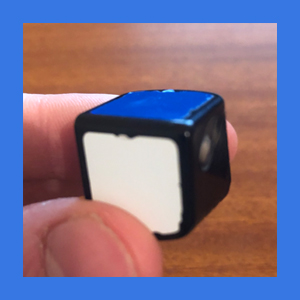

the cube has 12 edge pieces, each with 2 stickers on them. likewise with corners, edges cannot move from the edge, and there is only 1 of each edge piece. there are not 2 Green/Red edges, only 1.
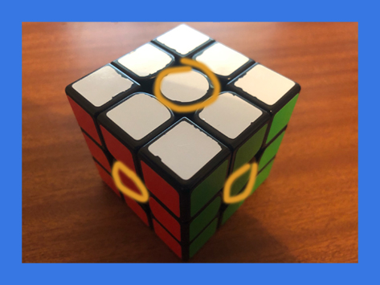
lastly, the centres. the centres REPRESENT THE COLOUR OF THE FACE. if the centre sticker is blue, it is the blue face, regardless of the other stickers on that face. the centres are locked in place, and will never change position. you can't swap the blue and red centres, but you can rotate a group of 4 centres by turning a middle face.
types of moves
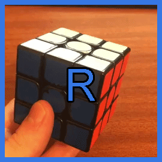
this is the R layer. it is the right face of the cube.
note, the orientation of the cube does not matter.. whichever side is on the right is the R face.
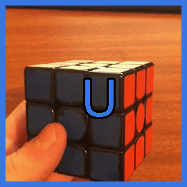
this is the U layer. it is the up face of the cube.
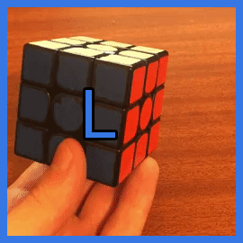
this is the L layer. it is the left face of the cube.
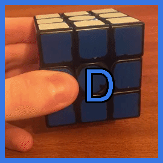
this is the D layer. it is the down face of the cube.
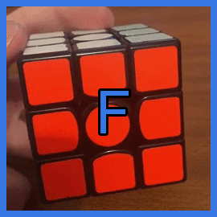
this is the F layer. it is the front face of the cube.
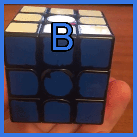
this is the B layer. it is the back face of the cube.
each of these faces can be manipulated in different ways. if you turn that face clockwise, you designate that letter by itself.
R U R U means you would turn the RIGHT face clockwise, the UP face clockwise, the RIGHT face clockwise again, and the UP face clockwise again.
if you turn the face counter-clockwise, you designate that letter with a ' symbol (known as a prime here)
R U R' U' means you turn the RIGHT face clockwise, the UP face clockwise, the RIGHT face counter-clockwise, and then the UP face counter-clockwise.
if you turn the face twice, or 180°, you assign a 2 to that letter.
R U' D2 U R' means you would turn the R face clockwise, the U face counter-clockwise, the DOWN face twice, the U face clockwise, and the R face counter-clockwise.
method
step 1
the first step is to make a cross. you may start on any colour you like, but for this tutorial we will be creating a WHITE cross.
the aim of this step is to solve all white edge pieces. in other words, to place each whit edge into its correct position, and orientation.
to form the white cross, you first move all WHITE edges to the yellow layer, with the white sticker facing up
(remember, the centre sticker determines the colour of the face).
you then align each white edge to its corresponding centre. for example, the red sticker on the red/white edge should line up to the red centre. then,
simply turn that face twice to solve that edge. repeat this for all white edges, and you should have a complete white cross!
once you have done this, hold the cube so that the cross is on the bottom of the cube.
step 2
the second step is to solve the entire first layer. we continue on the side we did the cross on, if you solved the white cross, you now are solving
the rest of the white pieces to solve the first layer.
first, look for any white corner piece in the top layer (any corner with white on it), and identify where that piece belongs. if its the
Red/White/Blue piece, it belongs in the corner that connect the Red, White, and Blue layers.
next, position the cube so that the corner is on top of its correct position, and hold the cube with the white face down, and the corner you want to solve
on the right (as shown in picture).
perform the following algorithm.
R U R' U'.
repeat this algorithm as many times as needed until that piece is solved!
continue this process until there are no white corners in the up face... but you may not be done yet!
you may encounter a situation where you already have a white corner in the white layer, but it isnt in its correct position or orientation, as shown here.
to fix this, simply perfrom that same algorithm (R U R' U') once, to move that piece to the up layer, then solve it like you learned earlier.
if you have completed this step correctly, you will have solved the first layer!
step 3
the third step is to solve the entire second layer.
first, look for any edge pieces that do not have YELLOW on them (if you chose to start on a different colour, you look for any edges
that do not have the UP face colour on it... remember, hold the face you solved the cross on at the bottom.), then, move that piece so that the sticker
on the front of the piece (not the one on the yellow face) matches up with the centre for that colour.
this is a bit complicated, so please refer to the images and gifs provdided here to simplify this as much as possible.
identify where that piece has to go. if it has to go to the right, you move the piece to the left.
perform the following algorithm:
L' U' L U, then rotate the whole cube so that the corner is on the right now. then R U R' U'.
together, thats L' U' L U rotate R U R' U'.
the L algorithm here is identical to the first one you learned, except you are using your left hand now, instead of your right.
if the edge instead has to go the left, you move the piece to the right.
perform the following algorithm:
R U R' U', then rotate the whole cube so that the corner is on the left now. then L' U' L U.
this is the same algorithm as before, just in the other order.
repeat this step until there are no non-yellow pieces in the top layer... but again, you might not be done yet!
you have a situation where you have an edge in the right spot, just around the wrong way... or, in the right layer, but in the wrong position.
to fix this, move any other edge in the top layer into that piece, the same you would solve it normally, in order to move the edge to the top. then, you can
solve that edge as learned.
if done correctly, you will have solved the 2nd layer!!
How to cube
Pics and txt